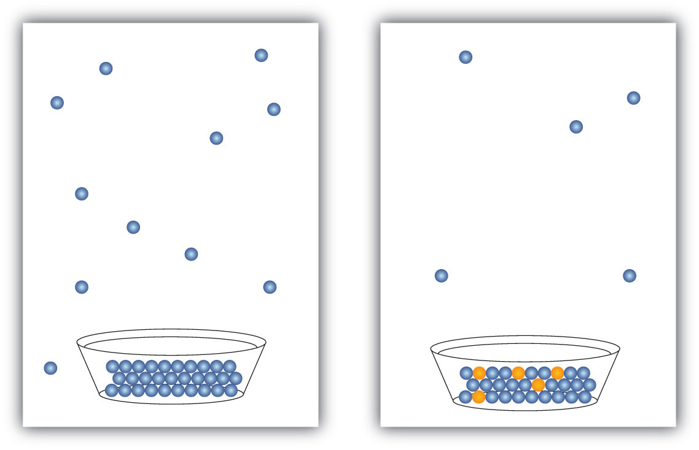

Solutions are likely to have properties similar to those of their major component—usually the solvent. However, some solution properties differ significantly from those of the solvent. Here, we will focus on liquid solutions that have a solid solute, but many of the effects we will discuss in this section are applicable to all solutions.
Solutes affect some properties of solutions that depend only on the concentration of the dissolved particles. These properties are called colligative propertiesA characteristic of solutions that depends only on the number of dissolved particles.. Four important colligative properties that we will examine here are vapor pressure depression, boiling point elevation, freezing point depression, and osmotic pressure.
Molecular compounds separate into individual molecules when they are dissolved, so for every 1 mol of molecules dissolved, we get 1 mol of particles. In contrast, ionic compounds separate into their constituent ions when they dissolve, so 1 mol of an ionic compound will produce more than 1 mol of dissolved particles. For example, every mole of NaCl that dissolves yields 1 mol of Na+ ions and 1 mol of Cl− ions, for a total of 2 mol of particles in solution. Thus, the effect on a solution’s properties by dissolving NaCl may be twice as large as the effect of dissolving the same amount of moles of glucose (C6H12O6).
All liquids evaporate. In fact, given enough volume, a liquid will turn completely into a vapor. If enough volume is not present, a liquid will evaporate only to the point where the rate of evaporation equals the rate of vapor condensing back into a liquid. The pressure of the vapor at this point is called the vapor pressureThe pressure of a vapor that is in equilibrium with its liquid phase. of the liquid.
The presence of a dissolved solid lowers the characteristic vapor pressure of a liquid so that it evaporates more slowly. (The exceptions to this statement are if the solute itself is a liquid or a gas, in which case the solute will also contribute something to the evaporation process. We will not discuss such solutions here.) This property is called vapor pressure depressionThe lowering of the vapor pressure of a solution versus the pure solvent. and is depicted in Figure 9.6 "Vapor Pressure Depression".
Figure 9.6 Vapor Pressure Depression
The presence of solute particles blocks some of the ability for liquid particles to evaporate. Thus, solutions of solid solutes typically have a lower vapor pressure than the pure solvent.
A related property of solutions is that their boiling points are higher than the boiling point of the pure solvent. Because the presence of solute particles decreases the vapor pressure of the liquid solvent, a higher temperature is needed to reach the boiling point. This phenomenon is called boiling point elevationThe raising of the boiling point of a solution versus the pure solvent.. For every mole of particles dissolved in a liter of water, the boiling point of water increases by about 0.5°C.
Some people argue that putting a pinch or two of salt in water used to cook spaghetti or other pasta makes a solution that has a higher boiling point, so the pasta cooks faster. In actuality, the amount of solute is so small that the boiling point of the water is practically unchanged.
The presence of solute particles has the opposite effect on the freezing point of a solution. When a solution freezes, only the solvent particles come together to form a solid phase, and the presence of solute particles interferes with that process. Therefore, for the liquid solvent to freeze, more energy must be removed from the solution, which lowers the temperature. Thus, solutions have lower freezing points than pure solvents do. This phenomenon is called freezing point depressionThe lowering of the freezing point of a solution versus the pure solvent.. For every mole of particles in a liter of water, the freezing point decreases by about 1.9°C.
Both boiling point elevation and freezing point depression have practical uses. For example, solutions of water and ethylene glycol (C2H6O2) are used as coolants in automobile engines because the boiling point of such a solution is greater than 100°C, the normal boiling point of water. In winter, salts like NaCl and CaCl2 are sprinkled on the ground to melt ice or keep ice from forming on roads and sidewalks (Figure 9.7 "Effect of Freezing Point Depression"). This is because the solution made by dissolving sodium chloride or calcium chloride in water has a lower freezing point than pure water, so the formation of ice is inhibited.
Which solution’s freezing point deviates more from that of pure water—a 1 M solution of NaCl or a 1 M solution of CaCl2?
Solution
Colligative properties depend on the number of dissolved particles, so the solution with the greater number of particles in solution will show the greatest deviation. When NaCl dissolves, it separates into two ions, Na+ and Cl−. But when CaCl2 dissolves, it separates into three ions—one Ca2+ ion and two Cl− ions. Thus, mole for mole, CaCl2 will have 50% more impact on freezing point depression than NaCl.
Which solution’s boiling point deviates more from that of pure water—a 1 M solution of CaCl2 or a 1 M solution of MgSO4?
The last colligative property of solutions we will consider is a very important one for biological systems. It involves osmosisThe process by which solvent molecules can pass through certain membranes but solute particles cannot., the process by which solvent molecules can pass through certain membranes but solute particles cannot. When two solutions of different concentration are present on either side of these membranes (called semipermeable membranes), there is a tendency for solvent molecules to move from the more dilute solution to the more concentrated solution until the concentrations of the two solutions are equal. This tendency is called osmotic pressureThe tendency for solvent molecules to move from the more dilute solution to the more concentrated solution until the concentrations of the two solutions are equal.. External pressure can be exerted on a solution to counter the flow of solvent; the pressure required to halt the osmosis of a solvent is equal to the osmotic pressure of the solution.
OsmolarityA way of reporting the total number of particles in a solution to determine the osmotic pressure. (osmol) is a way of reporting the total number of particles in a solution to determine osmotic pressure. It is defined as the molarity of a solute times the number of particles a formula unit of the solute makes when it dissolves (represented by i):
osmol = M × iIf more than one solute is present in a solution, the individual osmolarities are additive to get the total osmolarity of the solution. Solutions that have the same osmolarity have the same osmotic pressure. If solutions of differing osmolarities are present on opposite sides of a semipermeable membrane, solvent will transfer from the lower-osmolarity solution to the higher-osmolarity solution. Counterpressure exerted on the high-osmolarity solution will reduce or halt the solvent transfer. An even higher pressure can be exerted to force solvent from the high-osmolarity solution to the low-osmolarity solution, a process called reverse osmosis. Reverse osmosis is used to make potable water from saltwater where sources of fresh water are scarce.
A 0.50 M NaCl aqueous solution and a 0.30 M Ca(NO3)2 aqueous solution are placed on opposite sides of a semipermeable membrane. Determine the osmolarity of each solution and predict the direction of solvent flow.
Solution
The solvent will flow into the solution of higher osmolarity. The NaCl solute separates into two ions—Na+ and Cl−—when it dissolves, so its osmolarity is as follows:
osmol (NaCl) = 0.50 M × 2 = 1.0 osmolThe Ca(NO3)2 solute separates into three ions—one Ca2+ and two NO3−—when it dissolves, so its osmolarity is as follows:
osmol [Ca(NO3)2] = 0.30 M × 3 = 0.90 osmolThe osmolarity of the Ca(NO3)2 solution is lower than that of the NaCl solution, so water will transfer through the membrane from the Ca(NO3)2 solution to the NaCl solution.
A 1.5 M C6H12O6 aqueous solution and a 0.40 M Al(NO3)3 aqueous solution are placed on opposite sides of a semipermeable membrane. Determine the osmolarity of each solution and predict the direction of solvent flow.
The main function of the kidneys is to filter the blood to remove wastes and extra water, which are then expelled from the body as urine. Some diseases rob the kidneys of their ability to perform this function, causing a buildup of waste materials in the bloodstream. If a kidney transplant is not available or desirable, a procedure called dialysis can be used to remove waste materials and excess water from the blood.
In one form of dialysis, called hemodialysis, a patient’s blood is passed though a length of tubing that travels through an artificial kidney machine (also called a dialysis machine). A section of tubing composed of a semipermeable membrane is immersed in a solution of sterile water, glucose, amino acids, and certain electrolytes. The osmotic pressure of the blood forces waste molecules and excess water through the membrane into the sterile solution. Red and white blood cells are too large to pass through the membrane, so they remain in the blood. After being cleansed in this way, the blood is returned to the body.
Dialysis is a continuous process, as the osmosis of waste materials and excess water takes time. Typically, 5–10 lb of waste-containing fluid is removed in each dialysis session, which can last 2–8 hours and must be performed several times a week. Although some patients have been on dialysis for 30 or more years, dialysis is always a temporary solution because waste materials are constantly building up in the bloodstream. A more permanent solution is a kidney transplant.
Cell walls are semipermeable membranes, so the osmotic pressures of the body’s fluids have important biological consequences. If solutions of different osmolarity exist on either side of the cells, solvent (water) may pass into or out of the cells, sometimes with disastrous results. Consider what happens if red blood cells are placed in a hypotonic solution, meaning a solution of lower osmolarity than the liquid inside the cells. The cells swell up as water enters them, disrupting cellular activity and eventually causing the cells to burst. This process is called hemolysis. If red blood cells are placed in a hypertonic solution, meaning one having a higher osmolarity than exists inside the cells, water leaves the cells to dilute the external solution, and the red blood cells shrivel and die. This process is called crenation. Only if red blood cells are placed in isotonic solutions that have the same osmolarity as exists inside the cells are they unaffected by negative effects of osmotic pressure. Glucose solutions of about 0.31 M, or sodium chloride solutions of about 0.16 M, are isotonic with blood plasma.
The concentration of an isotonic sodium chloride (NaCl) solution is only half that of an isotonic glucose (C6H12O6) solution because NaCl produces two ions when a formula unit dissolves, while molecular C6H12O6 produces only one particle when a formula unit dissolves. The osmolarities are therefore the same even though the concentrations of the two solutions are different.
Osmotic pressure explains why you should not drink seawater if you are abandoned in a life raft in the middle of the ocean. Its osmolarity is about three times higher than most bodily fluids. You would actually become thirstier as water from your cells was drawn out to dilute the salty ocean water you ingested. Our bodies do a better job coping with hypotonic solutions than with hypertonic ones. The excess water is collected by our kidneys and excreted.
Osmotic pressure effects are used in the food industry to make pickles from cucumbers and other vegetables and in brining meat to make corned beef. It is also a factor in the mechanism of getting water from the roots to the tops of trees!
A perfusionist is a medical technician trained to assist during any medical procedure in which a patient’s circulatory or breathing functions require support. The use of perfusionists has grown rapidly since the advent of open-heart surgery in 1953.
Most perfusionists work in operating rooms, where their main responsibility is to operate heart-lung machines. During many heart surgeries, the heart itself must be stopped. In these situations, a heart-lung machine keeps the patient alive by aerating the blood with oxygen and removing carbon dioxide. The perfusionist monitors both the machine and the status of the blood, notifying the surgeon and the anesthetist of any concerns and taking corrective action if the status of the blood becomes abnormal.
Despite the narrow parameters of their specialty, perfusionists must be highly trained. Certified perfusion education programs require a student to learn anatomy, physiology, pathology, chemistry, pharmacology, math, and physics. A college degree is usually required. Some perfusionists work with other external artificial organs, such as hemodialysis machines and artificial livers.
What are the colligative properties of solutions?
Explain how the following properties of solutions differ from those of the pure solvent: vapor pressure, boiling point, freezing point, and osmotic pressure.
Colligative properties are characteristics that a solution has that depend on the number, not the identity, of solute particles.
In solutions, the vapor pressure is lower, the boiling point is higher, the freezing point is lower, and the osmotic pressure is higher.
In each pair of aqueous systems, which will have the lower vapor pressure?
In each pair of aqueous systems, which will have the lower vapor pressure?
In each pair of aqueous systems, which will have the higher boiling point?
In each pair of aqueous systems, which will have the higher boiling point?
Estimate the boiling point of each aqueous solution. The boiling point of pure water is 100.0°C.
Estimate the freezing point of each aqueous solution. The freezing point of pure water is 0.0°C.
Explain why salt (NaCl) is spread on roads and sidewalks to inhibit ice formation in cold weather.
Salt (NaCl) and calcium chloride (CaCl2) are used widely in some areas to minimize the formation of ice on sidewalks and roads. One of these ionic compounds is better, mole for mole, at inhibiting ice formation. Which is that likely to be? Why?
What is the osmolarity of each aqueous solution?
What is the osmolarity of each aqueous solution?
A 1.0 M solution of an unknown soluble salt has an osmolarity of 3.0 osmol. What can you conclude about the salt?
A 1.5 M NaCl solution and a 0.75 M Al(NO3)3 solution exist on opposite sides of a semipermeable membrane. Determine the osmolarity of each solution and the direction of solvent flow, if any, across the membrane.
NaCl lowers the freezing point of water, so it needs to be colder for the water to freeze.
It must separate into three ions when it dissolves.